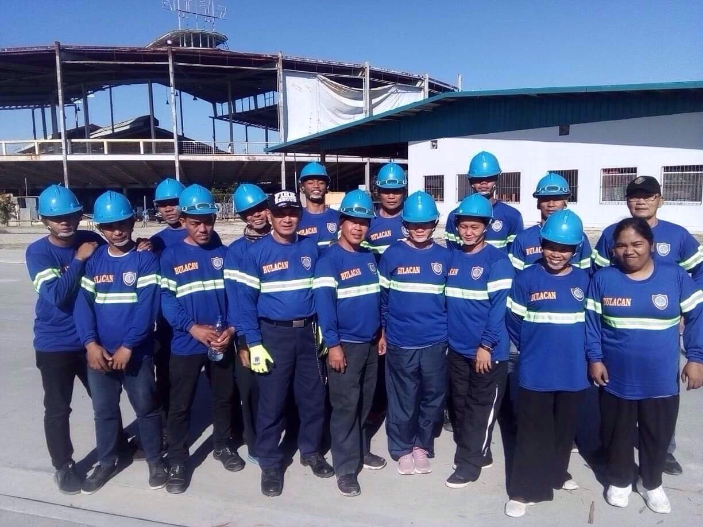
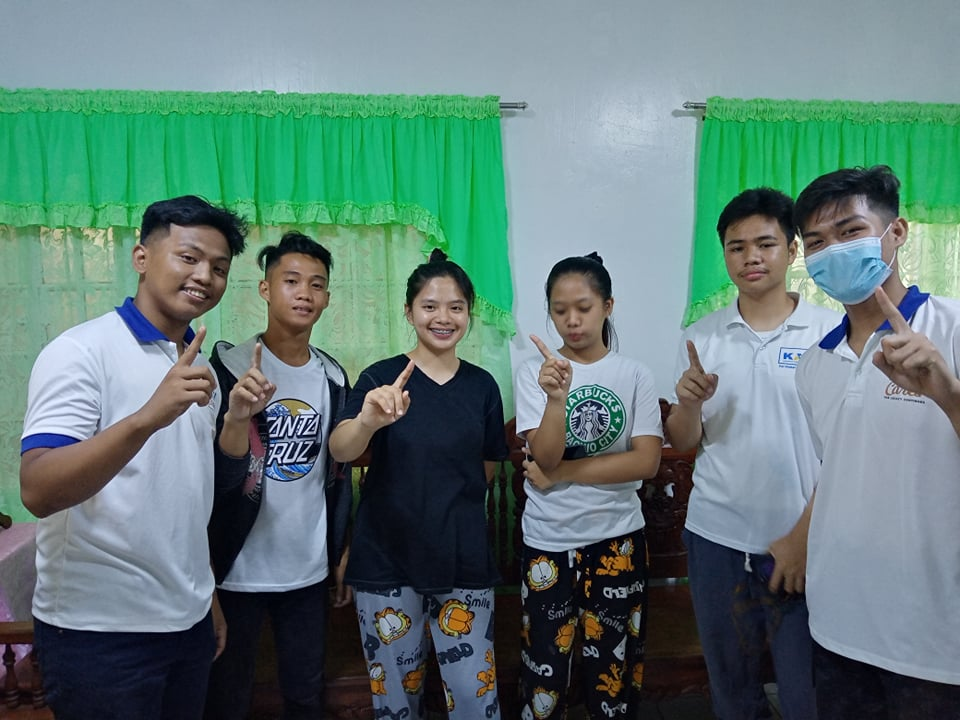

MCGI Security
Being a quat is difficult but it becomes easy if the Lord God is with us in our work, I became a quat as a child because I really want to be a police officer and I also want to serve the Church to be a part of it too, It's just a good feeling that the brothers and sisters feel safe when they see MCGI Security
MCGI CARES COMMITTEE
Being a part of MCGI Cares is a good feeling because you can serve GOD and share with people a gift, thank GOD for opportunities like this, it makes the heart grow when you know you are helping others.
MCGI PRODUCTION TEAM
Being an MCGI production is one of my duties now because Technology has been my passion since I was young, I like to tinker with things and explore the cellphones of things I don't know yet, so maybe I ended up being IT